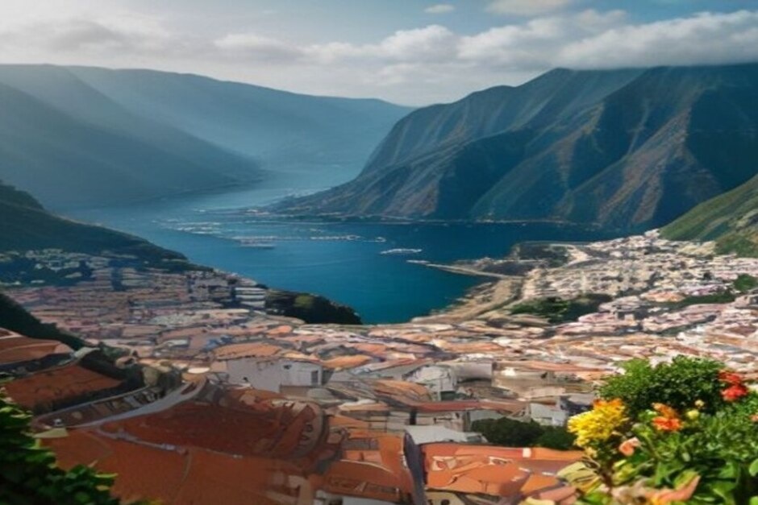

Wer in Funchal durch die Altstadt schlendert, sieht schnell: Nicht alles, was als Souvenir von Madeira verkauft wird, stammt von Madeira. Dieser Text hilft Ihnen, bei der Suche nach Spezialitäten, Korbwaren und Handwerk das Echte zu finden. Und er sagt Ihnen, was den Rückflug übersteht.
Die zehn Mitbringsel unten sind auf der Insel angebaut, gebrannt, geflochten oder gestickt. Wir haben sie nicht nach Beliebtheit sortiert, sondern danach, wie Sie sie am Ende im Koffer unterbringen: erst zum Trinken, dann zum Essen, dann Handwerk, zuletzt Dekoratives.
Bevor Sie losgehen: Wo und wann einkaufen
Kaufen Sie in Funchal, nicht am Flughafen. In den Fachgeschäften und Weinkellern der Altstadt ist die Auswahl deutlich größer als an den wenigen Duty-free-Schaltern, und die Preise sind dort nicht besser. Den Einkauf können Sie auf einen Regentag legen, denn vieles findet unter Dach statt: Weinkeller, Stickereihäuser und der Mercado dos Lavradores.
Planen Sie Ihr Gepäck von Anfang an mit. Flaschen, Liköre und Sirup gehören in den aufgegebenen Koffer. Im Handgepäck gelten die üblichen Regeln für Flüssigkeiten über 100 ml. Die Freimengen für Alkohol hängen vom Land ab, in das Sie zurückreisen. Wer in die Schweiz fliegt, sollte die Schweizer Regeln vorab nachlesen. Weitere Hinweise zur Anreise und zum Aufenthalt finden Sie auf unserer Seite Praktische Infos.
Zum Trinken: Wein, Poncha und Fruchtliköre
1. Madeira-Wein: die eine Flasche, die den Platz im Koffer verdient
Wenn Sie nur ein Mitbringsel kaufen, dann dieses. Madeira ist ein aufgespriteter Wein, der beim Reifen bewusst erhitzt wird, per estufagem oder in der langsameren canteiro-Methode. Deshalb hält er sich auch Wochen nach dem Öffnen. Das macht ihn zum Geschenk für Menschen, die nicht an einem Abend eine ganze Flasche trinken.
Gehen Sie direkt zu einem der Produzenten in Funchals Altstadt. Blandy's, Barbeito und Henriques & Henriques bieten alle Verkostungen an. So probieren Sie, bevor Sie zahlen.

2. Ein Poncha-Set für zu Hause
Poncha ist der Drink der Insel. Dafür brauchen Sie aguardente de cana, den Zuckerrohrschnaps, außerdem Honig, Zitrone und den hölzernen pilão zum Zerstoßen. Alles zusammen ergibt ein Set, mit dem Sie den Urlaub am eigenen Tisch nachmixen.
Câmara de Lobos gilt als Ursprungsort des Getränks. Dort verkaufen kleine tasca-Läden nahe dem Hafen die Zutaten oft gemeinsam. Auf unserer Tagestour legen wir in Câmara de Lobos an, falls Sie das mit einem Einkauf verbinden möchten (Tagestour ansehen).
3. Fruchtliköre: Maracujá, Anona und Banane
Auf den warmen Terrassen der Südküste wachsen Passionsfrucht (maracujá), Rahmapfel (anona) und die kleine, süße Inselbanane. Alle drei gibt es als Likör, in denselben Regalen wie der Wein. Sie sind milder und günstiger als eine Flasche Madeira und deshalb ein gutes Zusatzgeschenk für Kollegen oder Nachbarn.
Zum Essen: Was typisch ist und lange hält
4. Bolo de mel: der Kuchen, der für lange Wege gemacht ist
Wer nach typischem Essen auf Madeira fragt, landet schnell beim bolo de mel. Der dichte Gewürzkuchen wird mit Zuckerrohrmelasse gebunden und hielt traditionell monatelang ohne Kühlung. Er übersteht deshalb auch einen langen Rückflug. Sie bekommen ihn am Mercado dos Lavradores und in den meisten Bäckereien Funchals, ganz oder in kleinen verpackten Stücken.
5. Mel-de-cana: der „Honig“ ohne Bienen
Mel-de-cana ist ein dunkler, dickflüssiger Zuckerrohrsirup. Mit Bienenhonig hat er nichts zu tun, er gibt aber poncha und bolo de mel ihren Namen. Abgefüllt gibt es ihn in den meisten Lebensmittelläden und Märkten Funchals. Er ist leichter und günstiger als eine Flasche Schnaps, ein guter Ausweg, wenn Ihr Koffer schon voll ist.
Handwerk: Korbwaren, Stickerei, Fliesen
6. Korbwaren aus Camacha (vime)
Das ist die Suche, die viele Leserinnen und Leser zuerst eingeben: Korbwaren auf Madeira kaufen. Fast alles Geflochtene der Insel, vom Körbchen bis zum Sessel, kommt nach wie vor aus Camacha, einem Bergdorf oberhalb von Funchal. Dort wird seit dem 19. Jahrhundert Weide verarbeitet. Die Flechterei im Ort hat die frischeste Auswahl und verschickt größere Stücke, wenn der Sessel nicht in den Koffer passt.
Planen Sie dafür etwas Zeit ein, denn Camacha liegt nicht in der Stadt.
7. Bordado Madeira: Handstickerei mit Siegel
Die weiße Stickerei der Insel wird komplett von Hand auf Leinen, Organdy oder Baumwolle gearbeitet. Echte Stücke tragen ein kleines Bleisiegel von IBTAM, dem offiziellen Stickereiinstitut, das Herkunft und Handarbeit bestätigt. Tischdecken, Taschentücher und Taufkleider ohne dieses Siegel an offenen Ständen sind fast immer maschinell gefertigte Importe. Gehen Sie lieber in ein Stickereihaus im Zentrum von Funchal. Das Stück darf ins Handgepäck, dort wird es nicht zerdrückt.
8. Handbemalte Azulejos
Kleine bemalte Fliesen mit Hausnummer, Straßennamen oder einem Blick auf die Dächer Funchals fertigen einige Werkstätten in der Altstadt, oft auf Bestellung. Sie brauchen ein paar Tage zum Brennen und Fertigstellen, bestellen Sie also früh im Urlaub. Fliesen sind schwerer als Stickerei, lassen sich aber flach verpacken.
Für Wohnung und Garten
9. Strelitzie: die Blume im Reisekarton
Madeira nennt sich Blumeninsel, und die Strelitzie, auch Paradiesvogelblume, ist ihre bekannteste Blüte. An den Blumenständen nahe dem Mercado dos Lavradores bekommen Sie sie in flugtauglichen Boxen. Nach dem Einpflanzen hält sie wochenlang. Fluggesellschaften kennen diese Kartons und nehmen sie routiniert als aufgegebenes Gepäck an.
10. Ein Korbschlitten im Miniaturformat
Die carros de cesto, die Korbschlitten, die von Monte nach Funchal hinabgelenkt werden, gibt es auch als kleine Modelle aus Korb und Holz. Sie stammen aus denselben Werkstätten in Camacha, die die Schlitten in Originalgröße bauen. Das Modell ist klein, unverkennbar madeirisch und erinnert an eine Fahrt, die die meisten Besucher nur einmal erleben.
Was nicht auf der Insel gestickt, geflochten, gebrannt oder angebaut wurde, ist kein echtes Madeira-Souvenir. Es wird dort nur zufällig verkauft.
So packen Sie: eine kurze Checkliste
- Aufgegebener Koffer: Wein, Liköre, Poncha-Set, Sirup, Fliesen.
- Handgepäck: Stickerei, bolo de mel, kleine Modelle.
- Zum Verschicken: größere Korbwaren aus Camacha.
- Zuletzt kaufen: die Strelitzien, möglichst kurz vor der Abreise.
Madeira schmecken, bevor Sie einkaufen
Wer vorab ein Gefühl für die Insel bekommen will, kann Funchal auch vom Wasser aus kennenlernen. Bei Chifbay ist das Boot ausschließlich für Ihre Gruppe da, mit bis zu 5 Gästen und zwei lizenzierten Skippern aus Madeira. Treffpunkt ist die Marina do Funchal, Steg C. An Bord gibt es bei jeder Tour Essen und Getränke.
Die Tagestour startet um 10:00 oder 14:00 Uhr. Sie dauert 2 Std. 30 bis Ribeira Brava (500 EUR) oder 3 Std. bis Ponta do Sol (600 EUR), mit Câmara de Lobos, Cabo Girão sowie Badestopp und Paddleboards an der Fajã dos Padres. Die Sonnenuntergangsfahrt legt 1 Std. 15 Min. vor Sonnenuntergang ab, ganzjährig: 2 Std. bis Cabo Girão (400 EUR) oder 2 Std. 30 Min. bis Ribeira Brava (500 EUR), ohne Badestopp. Die Preise gelten für das ganze Boot, nicht pro Person. Bis 24 Stunden vor Abfahrt stornieren Sie kostenlos.
Einen Überblick über alle Möglichkeiten finden Sie unter Bootstouren auf Madeira oder direkt bei der privaten Bootstour.